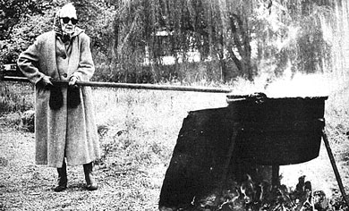
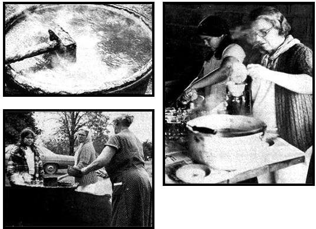

Nowadays, Great-Aunt Helen Douthit calls her annual apple butter-makin' Saturday "just an old-time project," but there was a period when it meant a heck of a lot more to her. Some of you new farm folks trying to make a living out there on the land may find that the same idea means a lot to you, too.
Fifty years ago, Aunt Helen and Great-Gran Mitchell started making a yearly affair of the early fall apple butter season. Then, when things got rough during the Depression, the Douthits transformed their autumn get-togethers into money in the pocket by increasing production and selling the delicious spread and other goodies at a roadside stand.
Apple butter was - and still is - a popular item at farm stands, and the Douthit family continues to make it. They feel that the preparation of the treat is a great way to get the clan together for a harvest celebration and earn a little money at the same time. Great-Gran, at the age of 90, supervises from the sidelines while Aunt Helen and numerous sons, daughters, grandchildren and others pitch in.
A quart of apple butter costs from three to six cents if you make it yourself - less if you have your own apples - and can easily bring 90 cents a quart or $3.50 a gallon at a roadside stand. (If you plan to sell such a product, you should check out any and all local laws dealing with the marketing of home-cooked foods. Most places don't enforce such regulations, but you'd better be aware of them anyhow.)
Money apart, this tasty preserve is a great way to put by some apples for the winter. Here's the recipe, distilled from a conversation with Great-Gran Mitchell herself.
First of all you'll need the right tools. The Douthits use a 30-gallon copper kettle with a rounded seamless bottom. The caldron rests on a specially designed tripod which holds it about a foot off the ground.
Equally important is a paddle for stirring the butter. The foot of that tool is as long as the kettle is deep and has three sections. The center portion is about an inch narrower on each side than the upper and lower thirds and the bottom section has five or six 1 inch holes drilled through it to keep the apple pulp circulating. The foot of the paddle is also rounded to fit the bottom of the kettle. The mixture has to be kept moving at all times while it cooks to ensure that it doesn't stick and burn. The seamless copper pot and special paddle are designed to help prevent that accident.
An old copper kettle will probably cost around $60 in a junk store these days, which is quite an investment. Remember, however, that your first batch of apple butter can pay for the pot. Also - as any old-timer will tell you - that vessel can be one of the most useful implements on the homestead. Gran Mitchell says that the family has sometimes tied cornhusks to its stirring paddle to help scrape the bottom of the clan's kettle clean, and you may want to do the same.
Great-Gran prefers Winesap apples mixed with a tart, drier variety such as Grimes Golden Apple, and the Douthits usually use five bushels of Winesaps to two bushels of Grimes. Gran adds, however, that any good pie apple is also fine for apple butter.
The family recipe calls for fruit that has been prepared with old-timey peelers and corers. The apples are then quartered before cooking. (Some folks insist on using the peels too, in which case the skins must be finely chopped before they're added to the kettle.)
To make 25 gallons of apple butter:
About 7 bushels of apples
Water
60 pounds white sugar (or alternate sweetener)
10 pounds brown sugar (or alternate sweetener)
4 gallons apple cider (optional)
1 cup cinnamon
1 cup white sugar
3 ounces whole cloves
Fill your pot about two-thirds full of apples and cover the fruit with water. Then start a fire under the kettle, and begin stirring at once. It's essential that the mixture be kept moving as long as the caldron is being heated. The going is rough with all those apple chunks in there, but Great-Gran Mitchell was doing the job three years ago, and if she can do it, so can you. To keep the apples constantly rotating, Gran recommends this cadence for the stirrer on duty: "Twice around left and back through the middle, twice around right and back through the middle."
After the apples have cooked down into a sauce, start adding more fruit, more water and the sugar. If unrefined sugar or honey is your bag, you'll have to experiment to figure out how much of the substitute sweetening to add to suit your taste. From the time the fire is lit until the preserve is done, the cooking operation will take approximately eight hours, so you must stagger your additions of ingredients. The last of the sugar should go in about six hours after the cooking is started. The apples are added until you run out, and the water is used as needed to keep the sauce from getting too thick. If you want to give your brew a more "appley" kick, take four gallons of apple cider, boil it down to one, and pour it into the pot.
There are three ways to tell when the apple butter is done: [1] The sauce should taste sweeter than you like it to be (foods seem more sugary when they're hot than when they're cold). [2] It should have turned reddish-brown ... the redder the better. [3] It should have stopped "weeping": that is, the water should no longer separate from the pulp. The butter is not ready until all three of these requirements are met.
When you've determined that the cooking is almost finished, mix a cup of cinnamon with a cup of sugar and blend them into the pot. Sprinkle in about three ounces of whole cloves. In another 15 minutes you should be ready to bottle the butter.
Any glass containers will do fine for bottling apple butter. The Douthits use everything from Mason to instant coffee jars. There's no need to sterilize the glasses, but they must be thoroughly scalded. Then refrigerate the apple butter, and begin using immediately.
Ladle the apple butter into the jars, sprinkle a little cinnamon on top for good measure, screw the lids on tightly and ... get ready! Your neighbors will probably have gotten t the word by that time and will already be truckin' on over to buy some of your genuine old-timey apple butter.
See also:
* Autumn Apple Treats
* What to Do With Windfall Apples
* Collect Windfall Apples
* One Man's Apples
* Worm-Free Apples
* Apples
* Falling for Apples
* And More!
|
 Great-Gran stirs an old-fashioned pot of apple butter. |
 Making apple butter can be a fun seasonal family project. |
|